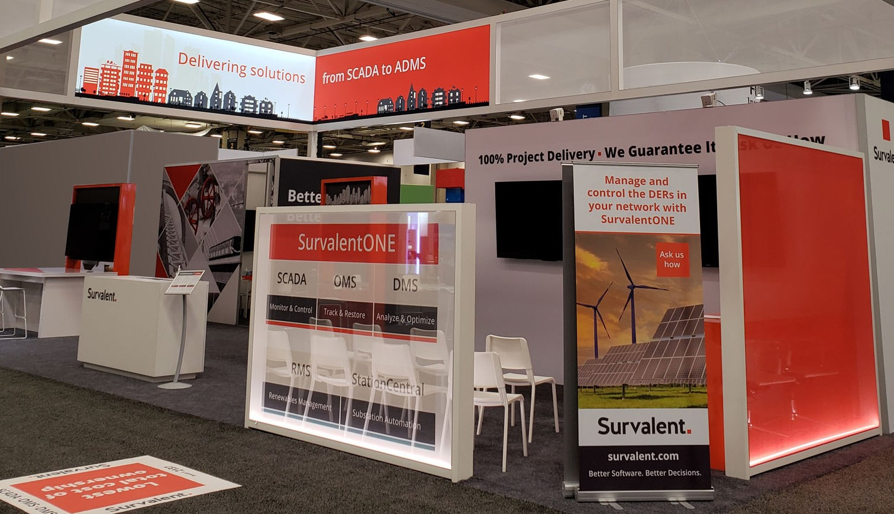

Summer 2024 - Survalent
Ethan Wang - wange@uoguelph.ca
Survalent booth at a trade show in Chicago
Welcome to my report on my work term as a Quality and Infrastructure Developer at Survalent Technology. During this placement, I had the opportunity to collaborate with a talented and supportive team while taking on a variety of technical challenges. Over the course of the term, I strengthened my skills in software development, problem solving, and technical communication. All of which played a vital role in my success in this role. This report outlines my experiences and reflects on the most important lessons I learned in this role.
About the Employer

Survalent develops software for Advanced Distribution Management Systems (ADMS), which are used by electric, renewable energy, oil & gas, water/wastewater, and transit utilities across the globe. These systems, built on a Supervisory Control and Data Acquisition (SCADA) platform, allow utilities to effectively operate, monitor, analyze, restore, and optimize their operations. By offering a fully integrated solution to support critical utility functions, Survalent enables its customers to achieve greater operational efficiency, enhanced customer satisfaction, and improved network reliability.
My Role
During my work term, I contributed to the SmartVU project, a visual utility designed to simplify how operators interact with ADMS data. SmartVU provides intuitive tools to view, manage, edit, and share real-time system information. My role involved developing automated testing solutions that integrate into the build pipelines, ensuring the reliability and functionality of the software with every update.
Goals
-
Technical - Improve my depth and understanding of automated testing and testing frameworks.
I believe I achieved this goal, as I now feel confident writing effective automated tests and working with testing frameworks. Through hands-on experience with the SmartVU project and continuous integration pipelines, I gained a solid understanding of how automated testing ensures software reliability and quality.
-
Communication - Improve my ability to collaborate and contribute effectively in a team environment
I'm proud to have achieved my goal of contributing effectively in a team environment. By communicating technical ideas clearly and seeking regular feedback, I was able to build strong working relationships and ensure alignment across the team. The positive feedback from colleagues and the success of our collaborative efforts reflects the value of clear, inclusive communication.
-
Problem Solving - Understanding of Software Development and its Processes.
Throughout my work term, I became much more familiar with real-world software development practices, including version control, committing code, creating pull requests, and reviewing changes. I also gained hands-on experience with build processes and CI/CD pipelines, which helped me understand how code moves from development to production. This exposure improved my problem-solving skills by teaching me how to work within a structured workflow, identify issues early, and contribute more effectively to team deliverables.
Conclusion
My work term at Survalent Technology has been an incredibly valuable learning experience. I had the opportunity to strengthen my technical skills, especially in automated testing, software development processes, and team collaboration. Working on real-world projects like SmartVU gave me a deeper understanding of how large-scale utility systems operate and the importance of quality and reliability in critical infrastructure software. I’m grateful for the guidance and support of my team, and I leave this term with greater confidence in my abilities and a clearer sense of direction in my career as a developer.
Acknowledgments
I’d like to thank Evan, a fellow UoG coop student, for being a great collaborator throughout the term. It was really helpful to share ideas and troubleshoot challenges together. I’m also especially grateful to Pascual for his guidance and support in getting me up to speed. His patience and willingness to share his knowledge made a big difference in my learning experience.